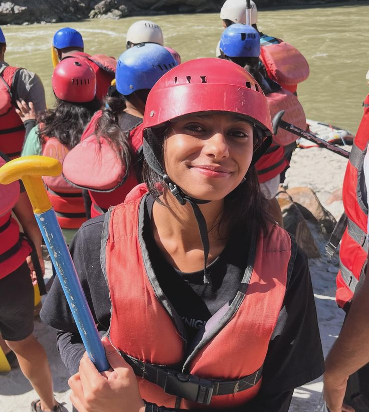

At Vortex Rapids Co., we don't just guide river trips—we unleash adrenaline. For over a decade, our expert team has been conquering the wildest Class V rapids, offering thrill-seekers an unmatched, heart-pounding white water experience. If you're ready to test your limits and ride the vortex, grab a paddle.